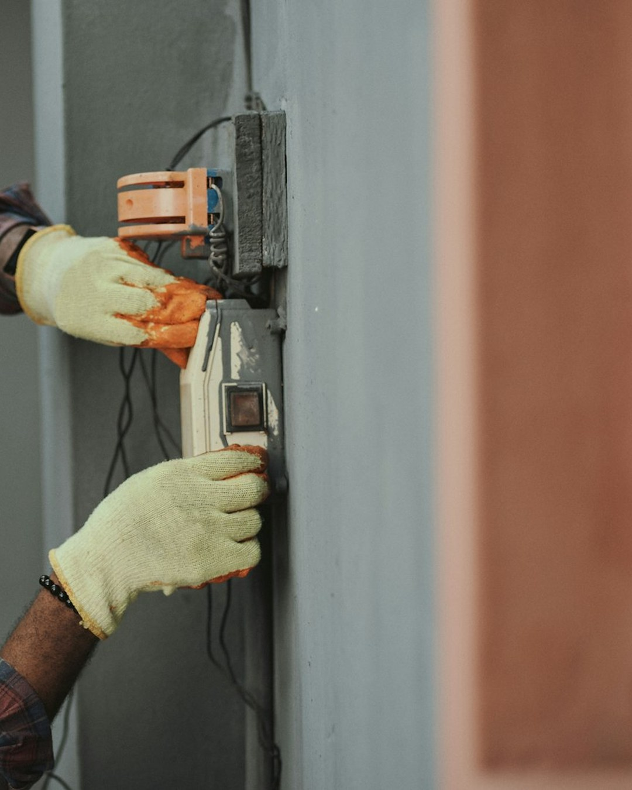
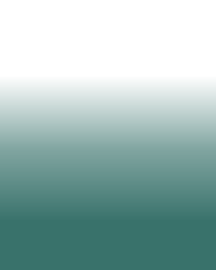

fairhealth · Cuidado em números2026 //
98%
do time aceitou
ser cuidado.
O que essa indústria fez diferente?
Foto ilustrativa
fairhealth · Cuidado em números2026 //
O case
Uma indústria, no primeiro semestre de 2026.
O Escritório do Cuidado dentro da empresa, perto de quem trabalha.
Os números a seguir são do grupo, sem identificar ninguém.
fairhealth · Cuidado em números2026 //
Adesão
98%
de adesão ao Escritório
do Cuidado.
48 colaboradores atendidos · 1º semestre de 2026
fairhealth · Cuidado em números2026 //
Volume
161
atendimentos
no semestre.
1º semestre de 2026 · dados do grupo
fairhealth · Cuidado em números2026 //
Continuidade
81,3%
voltaram para dois
ou mais atendimentos.
1º semestre de 2026 · dados do grupo
fairhealth · Cuidado em números2026 //
Entre as consultas
46
smartwatches em uso,
acompanhando a rotina.
No 1º semestre de 2026. Nas consultas, as medições usam bioimpedância. O RH recebe só indicadores do grupo, anonimizados.
fairhealth · Cuidado em números2026 //
O que estava por trás
Três escolhas do Escritório do Cuidado.
- O cuidado perto de quem trabalha, dentro da empresa.
- A primeira consulta começa pela pergunta: o que importa para você?
- Um plano pela Medicina do Estilo de Vida que cabe no turno.
fairhealth · Cuidado em números2026 //
Planejando 2027?
Comente CUIDADO e enviamos na DM como funciona o Escritório do Cuidado.

Dados agregados do Escritório do Cuidado numa indústria atendida, 1º semestre de 2026, sem nenhum dado individual. Foto da capa: banco de imagens, ilustrativa.